Brett of BNL bought the 1.35l model in a Japanese super market
in Fort Lee, NJ (discount price USD4.59) and sent a scan, omitted
here.
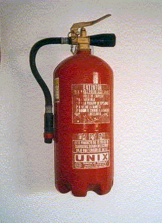
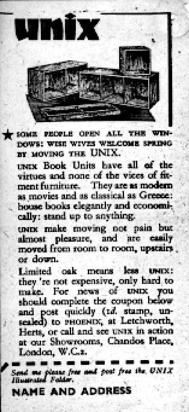
I showed a prototype of this page to Brian Kernighan, and he forthwith
dug into his files and found an original paper version of a different ad for the same
product. This page is getting too graphics-rich, so I won't display it separately.
It lacks the quotable phrases from the one displayed, but it is
available for viewing.
Kernighan's, as we shall see, dates from
at least 10 years after than this one.
The scan displayed here (which has been res-reduced)
seems certain to derive from one by Ian Utting at
University of Kent, Canterbury,
UK. He has a scan of the same advert,
and indeed the original page from which it was made. His original came
from Housewife magazine, p.127, April 1941, Vol 3 No 4,
published by Hulton Press, London.
Ian's
page is here; click on his ad to see an unreduced version.
Utting's sighting represents the earliest
reference I've seen, and it comes with a reliable date.
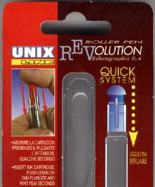
Another photo of the same product was sent by
Tommi Hassinen, of the University of Kuopio, likewise
in Finland.
This Italian company seems to have strong marketing in Scandinavia.
I just received from Karri Huhtanen this note, accompanied by a photo:
Sami went to local cheap general store chain called HalpaHalli to get
some of the things needed and found this UNIX-branded glue among other
things shown also in picture:
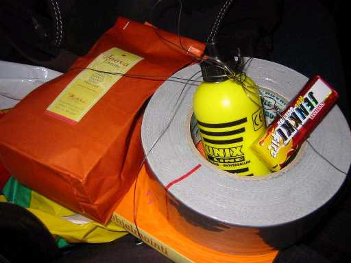
Mark Horton, long at Bell Labs and now
with Avaya, kindly sent an unopened package of five UNIX 2001
ballpoint pens,
purchased in the US. It seems to be from the same company,
so they sell here as well.
Others keep seeing their products: e.g. Brad Knowles,
who commends the company's line of
highlighter pens.
Rob Wolfram has just reported seeing Unix Line pens
in Suriname, on the northern coast of South America.
I have more than enough pictures of their products!
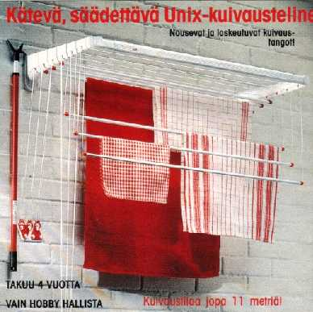
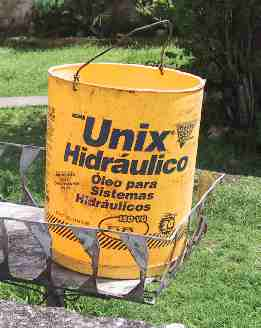
Ralf took this photo on a visit to Morretes, Paraná, Brazil.
He says that the frame on which the bucket is resting is used
to store trash out of the reach of animals until it's picked up.
Fazal Majid captured the large photo during a visit to
Caen, France around 1994; it depicts a poster on the wall of a flower
shop. Just after he sent it to me, he alerted me to the then-current
home site of the product; the second
picture was captured from there.
He and I were both charmed by its phrase "There are those who take risks, and those
who take UNIX."
Since then, the company has changed hands, as was kindly pointed out
by Khalid Baheyeldin. The product is still present on the
Syngenta web site, but accompanyied by less interesting advertising. Still, if
you can handle PDF pages, you could check
one of the ads.
When Majid sent the first image, I guessed (perhaps hoped) that
the anti-fungal properties of the product were intended for
the personal, perhaps intimate, use of the nouvelle génération.
It is in fact a product for fungal diseases of wheat and barley.
Christian Lefebvre recently sent another ad image for the same
product (not shown), but we both like the main text words:
"Unix en granulé dispersable, la formulation de l'avenir,"
or "Unix in dispersible pellets, the formulation for the future."
Andy Ward subsequently sent along an image of a UK ad for
(presumably) the same product.
It advises us that "UNIX® [is] the essential partner for
eyespot or rynchosporium control in barley."
Well said.
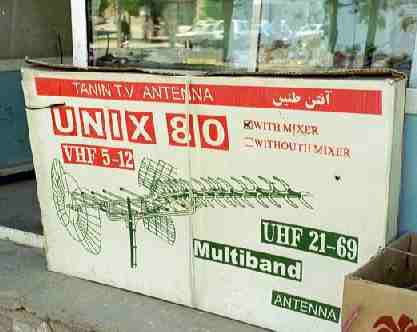
Dick Snippe of the Netherlands took a photo of a box containing a
Unix TV antenna. It was outside a shop on the main street of
Kerman, in eastern Iran.
If you look carefully, you'll see that it comes "with mixer,"
and on the page from which I captured the image, the caption
(tr. from Dutch) asks "Yes, Unix WITH mixer! Does linux come with a mixer?"
For sake of conserving space I cropped out a poster of Khatami,
the relatively moderate President of Iran. Dick remarked in e-mail
that one could detect the political sympathies of shops'
proprietors by seeing which leaders' portraits were displayed.
This one, he observed, was evidently rather liberal, since the more
conservative leaders didn't appear at all. Other shops
often have smaller pictures of the more conservative leaders,
even if the largest is of Khatami.
Dick also reports that attempts to engage the shopkeeper about
the fine points of Unix antennas or operating systems failed
for lack of common language.
Thanks to Wilco Noordermeer for sending the initial pointer.
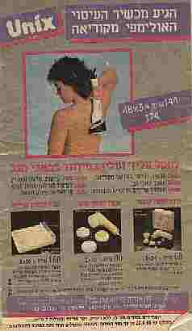
JC van Winkel uncovered a much more extensive Unix massage connection,
specifically a
Unix Massage Chair, which claims that "The Unix 501 offers the tapping,
kneading, and rolling massage of a
professional massage therapist."
If this link stops working, a WWW search will
turn up many more suppliers of these chairs.
Liam Stitt, from Alberta, Canada happened on
this product independently.
And if you want more personal attention and an actual massage therapist,
the UNIX Massage Shop, based in
North Hollywood, CA, offers chair massage done by human attendants
instead of gadgetry in the chair.
[regrettably, this place seems to have disappeared from the WWW.]
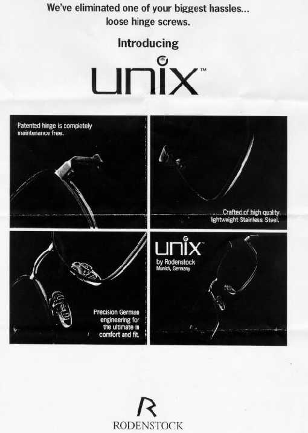
Maybe they didn't sell well. www.rodenstock.com does
feature their eyeglass products, but have deemphasized the Unix brand
to the point of invisibility.
/japanlaw
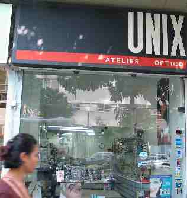
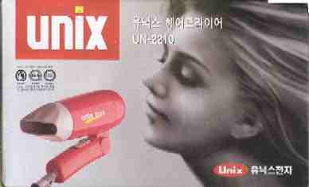
Thanks to Frank Mango for the pointer and the image.
More recently, Brian Walden (who photographed the peluqueria
in Costa Rica shown below) ordered security cameras for his company,
and they turned out to be shipped from Unix Business Systems,
based, it appears, in Korea, but with a distributor in Los Angeles.
He sent pix of the shipping box and their mailing label,
proving their existence but I'll omit them until
the elusive WWW sites referring to this product become more
readily accessible.
Istvan tells me that Autóalkatrészek does
mean auto parts, and that their slogan
És az autó biztosan megy tovább...
is approximately "And the car keeps on going well..."
A mystery awaited unveiling, so I sent e-mail to the webmaster of
the Drypers WWW site, and received the following response, both satisfyingly
detailed and friendly:
UPDATE! Alides Meijering (of Lucent in Germany)
reports that Europa Service hasn't abandoned the
Unix name; he sent a photo (March 2003) of a branded van, and
kindly pointed out
further evidence
in the form of the URL for the company.
The colored spots aren't Xmas lights; he believes they owe to X-ray
damage to his film at the airport.
From much further south, Wanderlei Antonio Cavassin pointed me
to a similar, but evidently a bigger enterprise in
São Paulo, Brazil: the
Unix Cabeleireiro, which seems to be a much tonier place.
It continues the tradition of Unisex, Unix, and haircare.
Dave Brown also sighted (and investigated) the
salon near the Yokohama
rail station, and has
another photo of the salon, which he reports is actually located
on the third floor of an otherwise unassuming office
building. They seem to have lots of signs, however.
The personal-care theme spread to Freeport, Illinois
in the form of manicuring;
J. P. Hindin captured this one.
He has the
original.
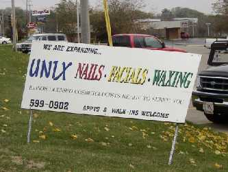
And it also spread to the vicinity of Austin, TX.
Dave Wieboldt found a Yellow Pages ad for
a manicure shop. The
WWW version can be looked at as long as the link lasts.
Dave even photographed the shop itself;
the photo is here.
A correspondent informs me that the Hangul
lettering transcribes/translates to "Eric's Furniture."
I don't know what to make of that.
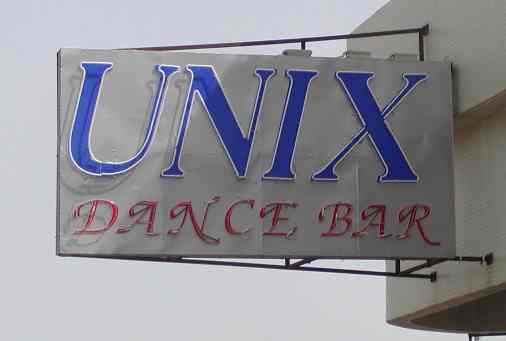
Robert Hofner sent a photo of the sign adorning
a new establishment in Ashdod, Israel.
The local paper, he says, reported its opening
with the note that "Unix is some sort of computer
language."
Jordi promises to investigate, but
the door was locked when he visited.
We (me, Sami Keski-Kasari and Heikki Vatiainen) were trying to compose a
gift for one of our friends. The idea was to gather certain objects that
would represent the things needed in Symbian mobile software programming
like glue, gum, java, iron wire, duct tape and of course theory book.
tarpeellista-tavaraa.jpg (roughly translated
things needed).

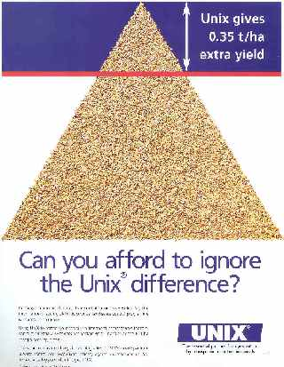
Drypers corporation bought Panollini in 1995. Pannolini previously sold
diapers under the Unix name, and we bought all rights to the name. We have
been selling under the Unix by Drypers logo. Unix is a takeoff on "unisex"
which means diapers for both boys and girls. Prior to 1995 almost all
diapers were sold in boys or girls versions, but all companies switched to
unisex about that time. There are many derivations throughout the world.
Proctor and Gamble sells
"Uni" in many locations, for example. None of this has anything to do with
Unix computers.
Established [in spirit] 1 Apr, 2000; modified June 2003.
{kind=link}
{kind=link}
{kind=link}
{kind=link}
{kind=link}
{kind=link}
{kind=link}
{kind=link}
{kind=link}